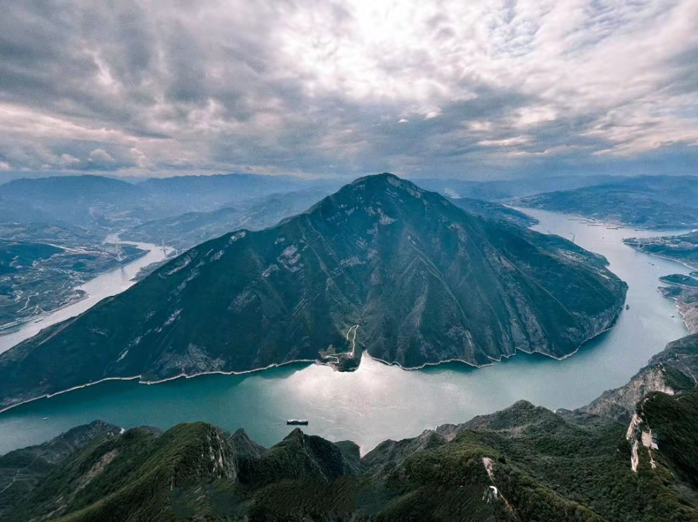

1994年三峡工程正式开工 · 万州涅槃重生之路
长江三峡水利枢纽工程，简称三峡工程，是当今世界上规模最大的水利枢纽工程，也是世界上综合效益最广泛的水电工程。大坝位于湖北省宜昌市三斗坪镇，坝顶高程185米，正常蓄水位175米，总库容393亿立方米，总装机容量2240万千瓦。
三峡工程采用“一级开发，一次建成，分期蓄水，连续移民”的建设方案，总工期17年。1994年正式开工，1997年实现大江截流，2003年实现135米蓄水、首批机组发电，2009年工程全面竣工，2020年通过整体竣工验收。这座凝聚了中华民族百年梦想的超级工程，彻底改写了长江中下游的防洪格局，也为三峡库区带来了翻天覆地的变化。
万州地处三峡库区腹心，是三峡工程淹没范围最广、搬迁移民人数最多的区县。175米淹没线将万州城拦腰截断，半座老城——包括最繁华的商业街区——永远沉入了江底。据统计，淹没涉及万州25个镇乡街道，370家工矿企业关停并转，淹没实物指标总量占三峡库区的五分之一。
万州搬迁安置移民26.3万人，占三峡移民总量的五分之一，是整个三峡库区搬迁人数最多的地区。其中80%是城市移民，此外还有大量农村移民后靠安置。2002年前后，为迎接库区蓄水，万州作出巨大牺牲——370家企业中九成关停，移民大量失业，库区产业空虚问题一度十分严峻。
三峡工程完成后，万州49%的城区被淹没。但同时，175米蓄水让长江在万州段变成了一个巨大的湖泊，“高峡出平湖”的壮丽景观由此诞生。昔日峡谷激流变为平湖碧波，万州的城市格局、产业结构和生活方式都在这场宏大的历史变迁中完成了重塑。
搬迁安置移民
工矿企业关停并转
城区被淹没
蓄水高程
七届全国人大五次会议表决通过《关于兴建长江三峡工程的决议》，三峡工程从百年梦想走向现实。
李鹏总理在宜昌三斗坪宣布三峡工程正式开工，中华民族的百年梦想开始变为现实。
三峡工程顺利实现大江截流，标志着三峡工程一期工程圆满完成。
三峡工程实现135米蓄水、双线五级船闸试通航、首批机组发电三大目标，万州等库区城市开始经历蓄水带来的深刻变化。
三峡大坝全线浇筑至185米设计高程，标志着大坝主体工程基本完成。
三峡工程首次进行175米试验性蓄水，万州“高峡出平湖”景观正式形成，库区航运条件极大改善。
三峡工程三期工程完成，标志着历时17年的三峡工程建设任务全面完成。
三峡工程完成整体竣工验收，工程质量满足设计要求，综合效益全面发挥。
三峡工程移民搬迁安置工作历时多年，重庆累计搬迁安置移民110万余人，是三峡库区移民搬迁安置任务最重的省市。万州作为三峡库区最大的移民城市，共搬迁安置26.3万人，占三峡移民总量的五分之一，是移民人数最多的区县。
移民搬迁涉及万州25个镇乡街道，370家工矿企业关停并转。许多万州人告别世代生活的家园，后靠安置或外迁到新的居住地。他们舍小家、顾大家，为国家工程无私奉献。正如当年的报道所言：“三峡库区移民超过百万，万州便有26万名之多。过去，他们舍小家顾大家，为国家工程无私奉献；如今，三峡大坝建成了，库区发展越来越好，移民也过上了安居乐业的好日子。”
为铭记这段历史，万州建设了重庆三峡移民纪念馆——全国唯一一座为纪念三峡百万大移民而修建的专题性纪念馆，也是国家一级博物馆。馆内收藏、保护、研究和展示三峡库区历史文化和移民文化，是了解三峡移民故事的最佳去处。
三峡移民搬迁完成后，万州面临着艰巨的重建任务。全国对口支援三峡库区的政策为万州带来了发展机遇。来自上海、天津、福建、南京、宁波、厦门、黑龙江等省市的对口支援，在基础设施建设、产业发展、教育医疗等方面给予了大力支持。
三十多年来，在各方援助与自身努力下，万州实现了从产业凋敝的移民新城到经济总量突破1200亿元的“双百”区域中心城市的华丽蝶变。城市建成区面积不断扩大，从巫山、奉节、云阳等库区县以及湖北利川、四川达州等地涌入的新移民，让万州城区人口持续增长。
眼下的万州，老城区加快补齐城市功能，江南片区打造特色新城，高铁片区以“产业生态化、生态产业化”先行示范，一座崭新的现代化都市在平湖之畔熠熠生辉。
高峡出平湖的背后，万州也面临着巨大的生态挑战。库区蓄水后，水流速度减缓，污染物扩散能力减弱；库区水位周期性涨跌，形成垂直落差达30米的消落带，被称为世界级治理难题；库区山高坡陡、沟壑纵横的地貌，城镇开发易导致水土流失、地质灾害等问题。
面对这些挑战，万州坚持生态优先、绿色发展，大力实施库岸整治、植树造林、水土保持等生态工程。如今，万州森林覆盖率已超过56%，从伤痕累累的库岸蝶变为生态明珠。一江碧水、两岸青山，成为万州城市最亮丽的底色。
三峡工程蓄水后，万州城区沿175米水位线展开，形成了“城在水中、水在城中”的独特城市风貌。三峡平湖旅游区被评定为国家4A级旅游景区，山水相依、游城相融，是万州最亮眼的城市名片。
每当夜幕降临，长江两岸灯火辉煌，南北滨江路绵延数十公里，璀璨的城市夜景倒映在宽阔的平湖江面上。三峡游轮在万州港停靠，游客可乘船夜游平湖，以宽阔的江面、往来的游轮、璀璨的城市夜景为天然背景，感受“高峡平湖明珠”的独特魅力。
从蜀道难的峡江小城，到“铁公水空”齐备的全国性综合交通枢纽；从产业凋敝的移民新城，到经济繁荣的“双百”区域中心城市——三十余年沧海桑田，万州已焕然新生。这正是一个民族、一座城市在时代洪流中不屈不挠、自强不息的真实写照。
“更立西江石壁，截断巫山云雨，高峡出平湖。
神女应无恙，当惊世界殊。”
——毛泽东《水调歌头·游泳》（1956年）
这首写于三峡工程构想之初的壮丽词章，如今已在万州变为触手可及的现实。